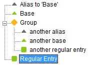

Wenn Sie ein System mit einer "einziger Anmeldung" verwenden, das es Ihnen erlaubt in mehreren Systemen / Server / Anwendungen, usw. dasselbe Passwort einzusetzen, können Sie in Password Safe die Einträge so einstellen, das bei Änderung eines Eintrages auch alle anderen artverwandte Einträge mit geändert werden. Diese nennt man "Alias" Einträge. Dieser Beitrag beschreibt die Definition und Anwendung dieser Alias.
Der Grundgedanke dabei ist zu erlauben dass das Passwort eines Eintrages von einem anderen Eintrag mitbenutzt wird. Der zu benutzende Eintrag wird Basis genannt und der benutzende Eintrag (oder Einträge) wird (werden) Alias genannt. Wenn ein Eintrag als Alias zu einem anderen Eintrag gesetzt wurde, 'folgt' das Alias Passwort gewissermaßen das Passwort des Basiseintrages. Wenn Sie das Passwort eines Alias in die Zwischenablage kopieren, wird tatsächlich das Passwort der Basis kopiert. Wenn Sie das Passwort der Basis ändern, spiegelt sich dies unmittelbar in sämtliche Aliaseinträge wieder. Obwohl dies kompliziert klingen mag, ist es eigentlich eher einfach und intuitiv. Am Aufwendigsten daran ist das Aufsetzen der Alias, wie unten beschrieben.
In Password Safe kann ein Eintrag auf das Passwort eines anderen Eintrag verweisen, mittels eines speziell formatierten Passwortes im benutzenden Eintrag. Das Format ist der "Name" vom benutzten Eintrag eingeschlossen in eckigen Klammern. Meistens versteht man unter "Name" das Synonym vom Feld Titel eines Eintrages. Wenn der Titel eines Eintrages z.B. "Master" ist, reicht die Eingabe von "[Master]" (ohne Gänsefüßchen) im Feld Passwort eines anderen Eintrages, um diesen als Alias von "Master" zu definieren, aus. Im allgemeinen, "Name" kann in diesem Kontext nachstehend genannte Felder, getrennt mit Doppelpunkt enthalten: Gruppe, Titel und Benutzername. Beachten Sie dass, wenn der Titel in der Datenbank eindeutig ist, die anderen Felder optional sind. Gleiches gilt, wenn Gruppe und Titel zusammen oder Title und Benutzernamen zusammen einen eindeutigen Eintrag ergeben.
Bei Einträgen in Password Safe ist nur das Titelfeld obligatorisch. Gruppe und Benutzername sind optional solange die resultierende Kombination aus Gruppe/Titel/Benutzername eindeutig ist. Wie oben erwähnt besteht das 'Alias Passwort' aus der Form [g:t:b] aber tatsächlich ist es ausreichend genügend Information anzugeben, um den Basiseintrag eindeutig zu identifizieren. Also, wenn nur ein einziger Eintrag mit Titel 't' in der Datenbank vorhanden ist, würde [t] ausreichen, weil Titel obligatorisch ist, und mit nur einem angegebenen Element nimmt man an dass es der Titel ist. Wenn mehr als einen Eintrag bestehen würde mit diesem Titel, kommt eine Warnung hoch, und Sie müssten genauer den Basiseintrag spezifizieren durch Angeben der Gruppe, des Benutzernamens oder eventuell sogar beide! So lange es ein einziger Eintrag gibt der mit den angegebenen Informationen zusammenpasst, werden die folgenden Formate angenommen: [g:t:b], [g:t], [t:b] oder [t]. Wenn Sie ein Doppelpunkt ohne dazugehörigen Wert angeben, wird von einem leeren Feld ausgegangen. Zum Beispiel: [g:t:] gibt einen Eintrag mit Titel 't' in Gruppe 'g' ohne Benutzernamen an, und [:t:] einen Eintrag mit Titel 't' in der Wurzel, ohne Benutzernamen usw.
Die folgenden Beispiele sollten dies klarstellen.
1. Wenn der Titel des Basiseintrages "LDAP Server" ist, und kein anderer Eintrag mit diesem Titel besteht, dann ist ein Alias mit dem Wert "[LDAP Server]" im Passwortfeld eindeutig definiert.
2. Wenn der Wert "LDAP Server" in Einträge von zwei verschiedenen Gruppen vorkommt -sagen wir "Abt. A" und "Abt. B"- dann kann der Eintrag für letztere mit "[Abt. B:LDAP Server]" spezifiziert werden. Bemerke dass der Benutzername nicht angegeben sein muss, wenn die angegebene Information ausreicht, um den Basiseintrag eindeutig zu identifizieren.
3. Unterschiedliche Benutzernamen können auch benutzt werden, um zwischen gleichartige Basiseinträge zu Differenzieren, z.B. "[LDAP Server:Joe]" und "[LDAP Server:Mary]".
4. Schlussendlich, alle drei Felder können angegeben sein wie in "[Abt. A:LDAP Server:Joe]"
Basiseinträge, d.h. Einträge mit mindestens ein Alias der auf ihn verweist, werden angezeigt mit einem grünen Dreieck anstelle des grünen Rechtecks in der Baumstruktur.
Alias Einträge sind mit einem weißen Dreieck gekennzeichnet.
